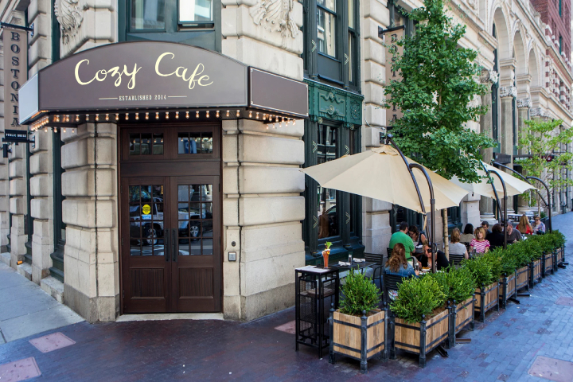
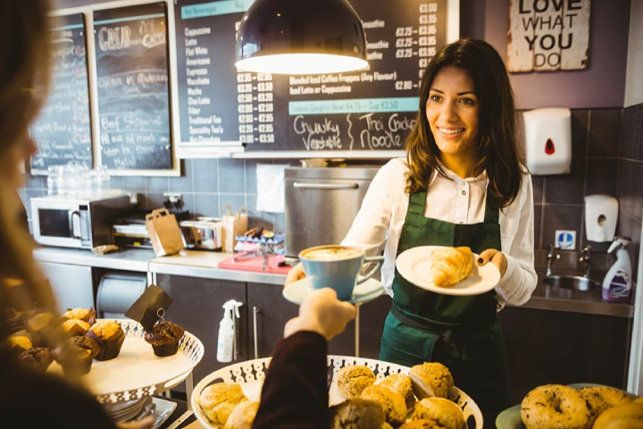

About Us
At Cozy Cafe, we believe the best moments begin with a warm cup, a good conversation, and a place that feels like home. Our cafe was created for slow mornings, lively lunches, and easy evenings shared with friends, family, and neighbors. Every detail is designed to make guests feel welcome, comfortable, and cared for from the moment they walk in.
From handcrafted coffee and fresh pastries to comforting meals and thoughtful service, we focus on simple pleasures done well. We are proud to serve a menu full of flavor, warmth, and familiarity, all in a relaxed setting that invites you to linger a little longer.

Welcome to Cozy Cafe at 214 Willow Lane, Maple Grove, where warm coffee, fresh comfort food, and a welcoming neighborhood atmosphere come together. We serve thoughtful meals and handcrafted drinks made with care, from slow mornings to easy evenings. Whether you're catching up with friends, enjoying a family meal, or taking a quiet moment for yourself, Cozy Cafe is the place to settle in, sip, and enjoy.
We invite you to explore our menu and discover a variety of comforting favorites made to satisfy every craving. Whether you're planning a casual breakfast, a relaxed lunch, or a cozy dinner, we are here to make your visit feel easy and memorable. Browse our menu, make a reservation, or contact us to learn more. We look forward to welcoming you and making your next cafe visit special.
